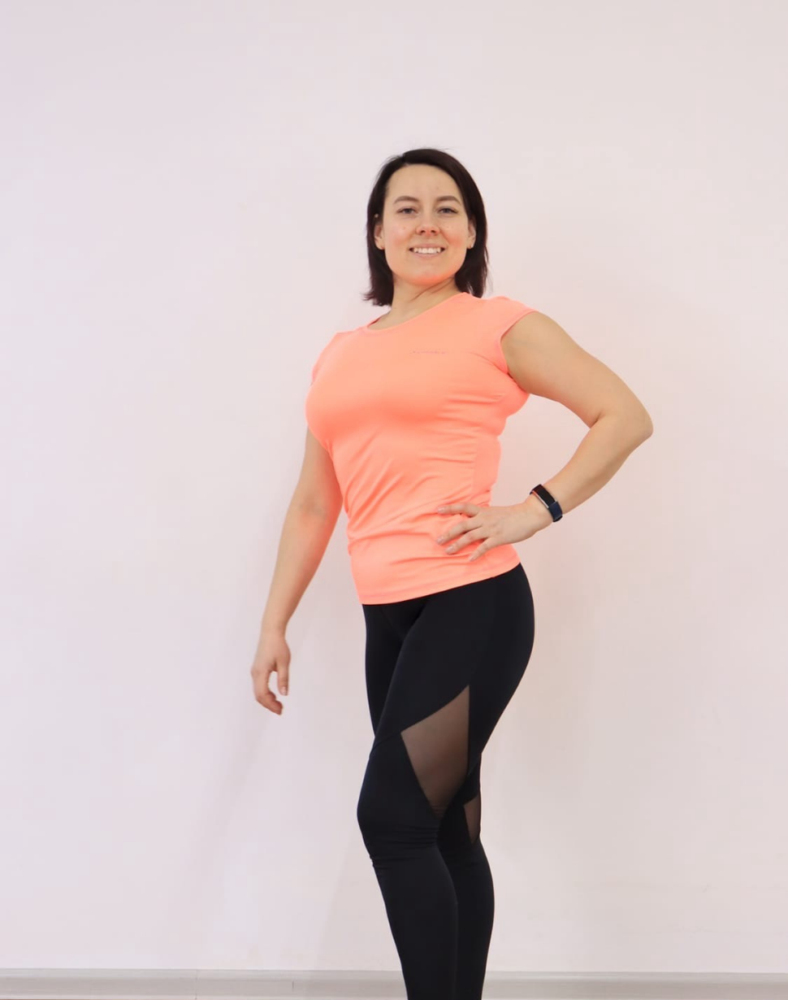

Создатель Системы Движения: Ольга Мартынова
В студии РЕСУРС полностью исключены случайные инструкторы без понимания анатомии. Каждая программа и тренировочный комплекс разработаны лично ведущим биомехаником на основе глубоких законов нейроцентрического тренинга.

(Рекомендуемый файл: olga-trainer.jpg)
Дипломированный эксперт физической культуры и умного фитнеса
Ольга Мартынова — ведущий специалист по восстановлению естественной подвижности суставов и декомпрессии позвоночника. В отличие от стандартных марафонов из интернета, строит практику на пересечении прикладной анатомии и спортивной медицины.
- Высшее профильное физкультурное образование и дипломированный статус специалиста.
- Сертифицированный мастер международного класса по миофасциальному релизу (МФР).
- Разработчик уникальной 3D-методики мягкой коррекции осанки и раскрытия грудного отдела.
- Автор и главный куратор дистанционных систем оздоровления тела «Детокс» и «Стройность».
Научное управление движением: Авторский контроль 11 направлений
Каждое направление в залах студии РЕСУРС в Сыктывкаре и в закрытом онлайн-клубе находится под личным контролем Ольги. Мы убрали деструктивные прыжки, ударный бег и агрессивную закачку мышц через силу, заменив их ювелирной биомеханической настройкой осей позвоночника.
«Моя цель — доказать миллионам женщин, что путь к тонкой талии, легкой походке без отеков и ясной голове лежит через бережное расслабление и мягкое вытяжение фасций, а не через изнуряющую пахоту в спортивных залах до изнеможения». — Ольга Мартынова
Начните практику под личным кураторством Ольги
Освободите суставы и сосуды вашего тела от статического офисного зажима. Выберите удобный формат взаимодействия — живые камерные занятия в Сыктывкаре на Коммунистической или деликатный онлайн-клуб домашних тренировок из любой точки России.